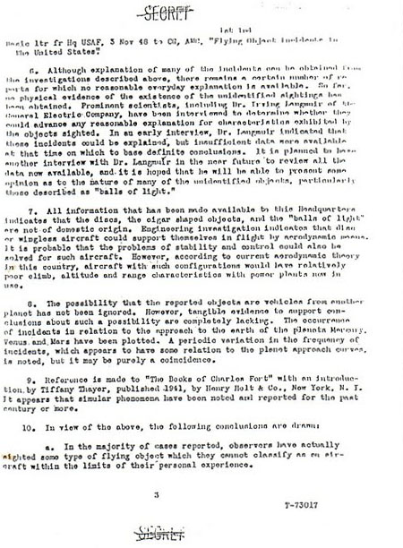

Dans la tentative d'arriver des conclusions quant à la la nature des incidents d'objet volant non identifiés aux
Etats-Unis, ce Commandement a fait une étude d'approximativement 180 de ces
incidents. Les données dérivées de rapports initiaux ont été augmentées d'autres informations obtenues de check
lists soumises par courrier, d'interrogations d'autres agences de terrain, et d'enquêtes personnelles par le
personnel de ce Commandement dans le cas d'incidents semblant indiquer une possibilité d'obtenir des informations
particulièrement significatives.
Les objets décrits tombent dans un des groupes généraux de classification suivants, selon la forme ou la
configuration physique :
Disque plat ou circulaire ou forme approximativement circulaire
Appareil en forme de torpille ou de cigare, sans ailes ou ailerons
visibles en vol
Certains des objets observés ont été identifiés de manière catégorique, lors d'une enquête ultérieure, comme étant
des ballons scientifiques météo ou de haute atmosphère
d'un type ou d'un autre. Un grand nombre des objets ronds ou à forme de ballon indiqués dans le paragraphe 2c ci-dessus sont
probablement de même nature, bien que dans la plupart des cas, une confirmation définie de ce fait ait été
impossible à obtenir.
Page 3 de la lettre d'origine  Certains des objets ont été
identifiés comme étant d'origine astro-physique. Par exemple, dans des observations de jour,
la planète Vénus a été signalée comme un objet rond argenté à
une altitude extrêmement élevée. Une action est entreprise pour obtenir les services d'un astro-physicien proéminent comme consultant, pour étudier
l'ensemble des incidents afin de déterminer si certains peuvent être identifiés comme météores, planètes ou autres manifestations de corps célestes.
Des arrangements pour réaliser une étude des problèmes psychologiques impliqués dans ce projet sont actuellement
faits en coordination avec le Laboratoire Aéro-Médical de ce Quartier-Général. La possibilité que certaines des
observations soient des hallucinations, illusions d'optique ou même des canulars délibérés a été envisagée.
Bien qu'une explication de nombreux incidents puisse être obtenue des enquêtes décrites ci-dessus, il reste un
certain nombre de rapports pour lesquels aucune explication de tous les jours raisonnable n'est disponible.
Jusqu'ici, aucune preuve physique de l'existence des observations non-identifiées n'a été obtenue. Des scientifiques proéminents, dont le Dr. Irving Langmuir de la
compagnie General Electric, ont été interrogés afin de déterminer s'ils pourraient avancer une quelconque
explication raisonnable des caractéristiques affichées par les objets observés. Dans une première interview, le Dr.
Langmuir a indiqué que ces
incidents pouvaient être expliquées, mais qu'insuffisamment de données étaient disponibles en ce moment sur
lesquelles fonder des conclusions définies. Il est prévu d'avoir une autre interview avec le Dr. Langmuir dans un futur
proche afin d'examiner les données maintenant disponibles, et il est espéré qu'il pourra présenter une opinion quant
à la nature de nombre des objets non-identifiés, en particulier ceux décrits comme des boules de lumière.
Toutes les informations rendues disponibles à ce Quartier-Général indiquent que les disques, les objets à forme de
cigare, et les "boules de lumière" ne
sont pas d'origine domestique. Une investigation d'ingéniérie indique que les disques ou appareils sans ailes
pourraient se soutenir en vol par des moyens aérodynamiques. Il est probable que les problèmes de stabilité et de
contrôle pourraient aussi être résolus pour de tels appareils. Cependant, selon la théorie aérodynamique actuelle de
ce pays, les appareils avec de telles configurations auraient des caractéristiques d'ascension, d'altitude et
d'autonomie relativement médiocre avec les sources d'énergie aujourd'hui en vigueur.
La possibility que les objets signalés soient des véhicules d'une autre planète n'a pas été ignorée. Cependant, des
preuves tangible soutenant les conclusions sur une telle possibilité manquent totalement. Les occurrences
d'incidents en relation avec l'approche de la Terre
des planètes Mercure, Vénus et Mars ont été tracées. Une variation périodique de la
fréquence des incidents, qui semble avoir une relation avec les courbes d'approche des planètes est notée, mais
pourrait être une pure coïncidence.
Référence est fait aux livres de Charles Fort avec une
introduction de Tiffany Thayer, publiée en 1941, par Henry Holt & Co.,
New York, N.Y. Il apparaît que des phénomènes semblables ont été notés et signalés depuis le siècle dernier ou plus.
Page 4 de la lettre d'origine Au regard de ce qui précède,
sont tirées les conclusions suivantes :
Dans la majorité des cas signalés, les observateurs ont en fait vu un type d'objet volant qu'ils ne
peuvent classer comme un appareil dans les limites de leur
expérience personnelle.
Il n'y a jusqu'ici aucune preuve concluante que les objets volants non-identifiés, autres que ceux connus
pour être des ballons, soient de véritables appareils aériens.
Bien qu'il soit évident que certaines sortes d'objets volants aient été observées, la nature exacte de
ces objets ne peut être établie tant que des preuves physiques, tels que celles qui résulteraient
d'un crash, aient été obtenues.
Il n'est pas considéré comme recommandable de présenter à la presse une information sur ces objets que nous
n'ayons pas encore put identifier ou sur lesquels nous ne puissions pas présenter de quelconque conclusions
raisonnables. Dans l'éventualité où ils insistent sur un type de déclaration, il est suggéré qu'ils soient informés
que nombre des objets observés ont été identifiés comme étant des ballons météo ou des corps célestes, et que l'enquête
se poursuit pour déterminer une explication raisonnable pour les autres.
Un rapport, résumant les résultats obtenus de l'analyse des données et une investigation technique des aspects
d'ingéniérie des objets décrits, est pratiquement achevé et une copie sera transmise à votre Quartier-Général dans
un futur proche.
Pour le général commandant :
H. M. McCoy Colonel, USAF Directeur du Département de
Renseignement
 Au regard de ce qui précède,
sont tirées les conclusions suivantes :
Au regard de ce qui précède,
sont tirées les conclusions suivantes :